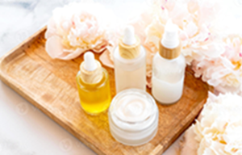

Efeito Glow: Passos para uma Pele Luminosa
A busca pela chamada "pele de porcelana" ou com brilho natural (glow) tornou-se o objetivo número um no universo da beleza. Mais do que cobrir imperfeições com maquiagem, a tendência atual é focar em uma rotina de skincare eficiente que trate as necessidades reais da barreira cutânea, promovendo viço de dentro para fora.
Para conquistar uma aparência radiante sem sobrecarregar a pele, especialistas recomendam focar nos quatro pilares essenciais:
- Limpeza Funcional: Comece removendo impurezas e resíduos de poluição sem agredir. Optar por um limpador facial suave e usá-lo com calma garante que os poros fiquem desobstruídos para as etapas seguintes.
- Hidratação em Camadas: A água é a chave do brilho saudável. Ativos como o ácido hialurônico e a glicerina ajudam a reter a umidade nas camadas mais profundas da pele, conferindo volume e maciez.
- Tratamento Antioxidante: A inclusão de uma vitamina C ou niacinamida pela manhã combate os radicais livres, uniformiza o tom da pele e previne o envelhecimento precoce.
- Proteção Solar Incondicional: O protetor solar é o item antidade definitivo. Além de prevenir manchas e rugas, as fórmulas modernas contêm ativos que protegem contra a luz visível de telas e poluição urbana.
Ao manter a consistência nessa rotina simplificada, a textura da pele melhora visivelmente em poucas semanas, revelando uma luminosidade natural e duradoura.
O que é a Regra dos 60 Segundos?
A ideia é simples: em vez de lavar o rosto rapidamente por 10 ou 15 segundos, você deve massagear o sabonete ou limpador facial na pele por um minuto completo.
De acordo com esteticistas, a maioria das pessoas não deixa os ingredientes do sabonete agirem pelo tempo necessário para quebrar a sujeira, o excesso de oleosidade e os resíduos de maquiagem.

Nossas Redes e Parceiros: